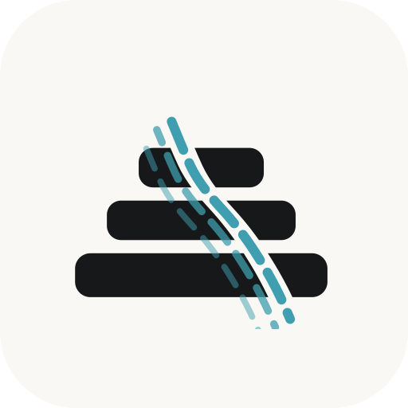

It's a website, so there's no app store — but it installs like an app in about ten seconds.
Paste a word list — CSV (one per line: spanish,english,pronunciation) or a JSON array of {"es","en","p"}. Pronunciation is optional.
spanish,english,pronunciation
{"es","en","p"}